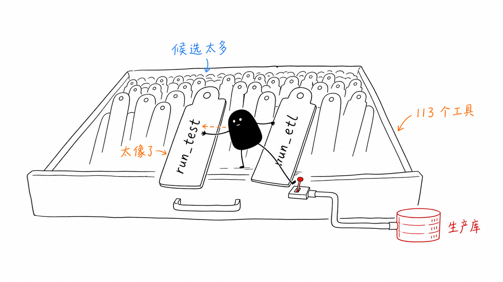
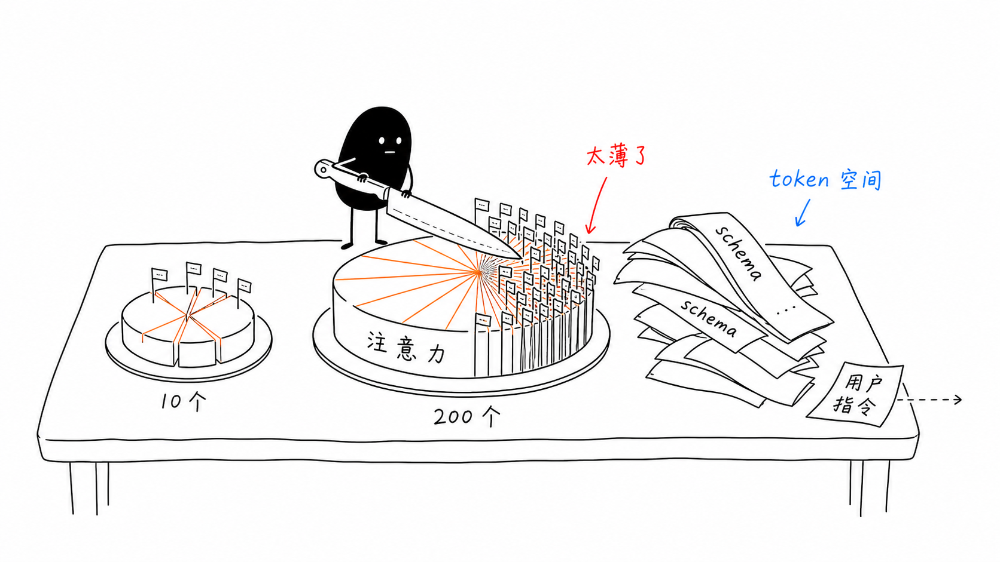
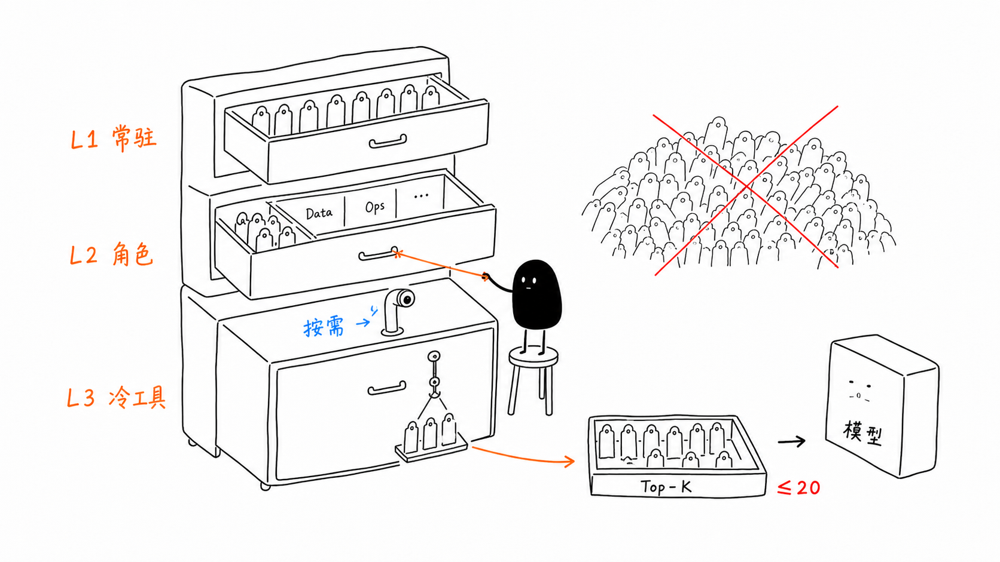
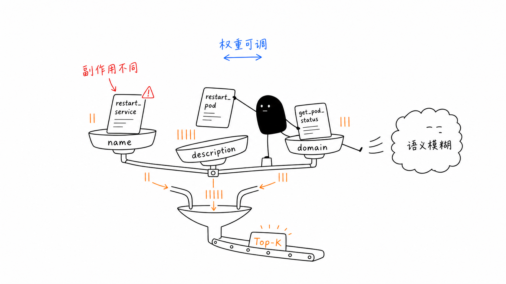
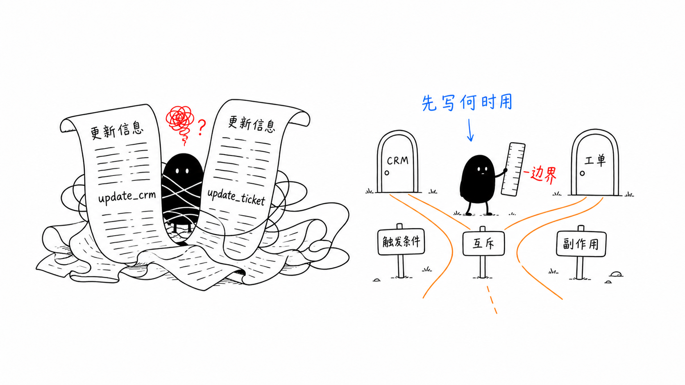
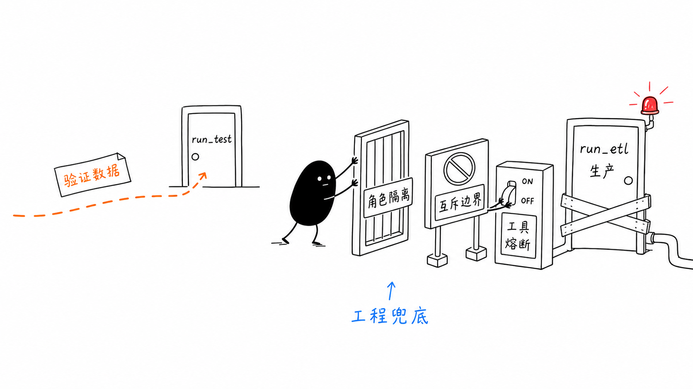

03｜注意力稀释：当 113 个工具让模型降智时，工程师该怎么做？
你好，我是李号双。
前两节课我们讲了 Loop 的架构铁律和工具的六大契约。如果你照着做了，单个 Agent 跑起来应该很稳。但工程里有个规律：能跑的东西，就一定会被要求跑更多。
一个数据质量审核 Agent，上线时 22 个工具，跑得很顺。三个月后业务需求堆上来，工具涨到了 113 个。
某天值班工程师发现，Agent 在生产环境连续调用了 run_etl——那个会真实迁移数据的工具——而不是只做验证的 run_test。

它调了 7 次，把 340 万条记录从预发布库迁进了生产库。查日志，工具调用记录完好，参数格式正确。查 Prompt，也没问题。
问题出在：113 个工具里，run_test 和 run_etl 的描述长得像双胞胎。
113 个工具，没人有心思打磨每一个描述。模型在约 0.9%（1/113）的注意力预算里，没能区分这两行字。
这不是模型变蠢了，而是工具给得太多，注意力被稀释掉了。
注意力稀释：一道让模型“降智”的数学题
Transformer 的自注意力机制本质上是个分蛋糕的过程：它会计算上下文中所有词的相关性，然后把注意力得分归一化到 [0, 1] 区间，总和为 1。这意味着，候选词越多，分到每个词的平均权重就越低。

工具选择也是一样。当上下文里有 10 个工具时，每个工具能分到 10% 的注意力预算；当工具数量达到 200 个时，每个工具只剩 0.5%。
除了注意力被稀释，更严重的问题还有 token 预算被物理吞噬。
一个中等复杂度的工具 schema（name + description + parameters）约消耗 200–600 token，按每工具 350 token 估算：
70000 token 的工具描述塞进去，用户指令还有多少空间？
L1/L2/L3 三层懒加载
计算机体系结构里解决 CPU 缓存问题，用的是 L1/L2/L3 Cache —— 背后是局部性原理：常用数据放近处，冷数据放远处。Agent 的工具加载也可以用同一套逻辑。

经验值：
一次推理，模型能看到的工具上限是 20 个
超过 20 个：按层懒加载
超过 50 个：必须上检索
这套架构落地到代码里，核心是一个 ToolRegistry，负责注册、分层、按角色路由：
用这套 registry 注册前面出事的两个工具：
注意最后的效果：QA Agent 的候选集里根本看不到 run_etl。安全边界在代码里，不在 Prompt 里。
上一节课我们讲工具原子化拆分，目的是让权限拦截有挂载点；这一节课的分层加载，则是让拆分后的工具只出现在该出现的上下文里。两节课配合，才能把“工具混淆”这个问题从根上堵死。
L3 检索的武器选择：让候选工具在多维上竞争，而不是预判意图
L1 + L2 解决了常用工具的加载。但 50–200 个冷门工具怎么办？很多团队到这一步，条件反射地上向量数据库——毕竟“语义检索”听起来更先进。
这里有一个反直觉的结论：对于绝大多数工具，不需要用向量检索。为什么？
工具名（比如 run_etl、restart_pod）本身就是形式化地址，就像函数名或 API 路径，不存在语义模糊。你搜 restart_pod，就是想找重启容器的工具。用向量做模糊匹配，反而会引入噪声：restart_pod（重启容器）和 restart_service（重启系统服务）在向量空间里可能靠得很近，但它们的副作用完全不同。
真正的解法是：放弃二分法，让每个候选工具在多个维度上同时竞争。
直接对所有 L3 工具算一个多维加权分数：
工具名维度（最强信号）：工具名被解析为标准化的词组集合。查询词命中工具名里的精确词，给最高分；命中词内的子串，给次高分；命中归一化后的全名，给兜底分。
描述维度（次强信号）：查询词在工具描述里以独立单词形式出现，给匹配分。
领域维度（交叉信号）：查询词精确等于工具的领域标签（如
db_、ops_、crm_），给附加分。

最后总分排序，取 Top-K。没有“if…else…”的分支判断，所有候选在所有维度上一起跑，让数据自己说话。
具体实现时，有几个设计考量至关重要。首先是工具名的解析。真实世界里的工具名千奇百怪：snake_case、CamelCase、Mixed 风格，甚至还有 domain-prefixed（如 db_query）或 special-prefixed（如 mcp__server__action）。
如果解析不到位，把 restart_pod 当成一个不可分割的整体，那么当用户查询“重启 pod”时，工具名维度就无法命中。系统必须能将各种命名约定准确切分成最小语义单元，这样工具名维度的强信号才能发挥作用。
这套多维加权框架最大的优势在于其适应性：不同 Agent 域，权重应该不同。运维 / DBA 这种 procedural agent，工具名几乎就是查询内容本身，name 维度权重要拉满；客服 / 销售这种 natural language agent，用户输入更口语化，描述维度权重要抬高。
注意，这种调节不是“开关式”地选 A 还是 B，而是同一套评分框架下权重的连续滑动。这让 A/B 测试和域适配都变成了“调几个浮点数”的工程问题，而不是“重新设计一条检索路径”的架构问题。从“先分类后选路径”升级成了“多维度加权竞争”，把不确定性彻底消解掉了。
description 是召回锚点，不是功能手册
第二讲我们在讲工具的“决策契约”时，提到过 description 的"六要素"写法，那是站在模型决策的角度，告诉模型“这个工具是干什么的”。
当工具池子变大、引入 L3 检索后，description 就承担了第二个角色：它是检索系统多维度评分里的关键输入。
如果进了候选集的工具，description 写得烂，描述维度的得分就是 0，工具依然会被埋没。这里有一个极度反直觉的结论：description 不是工具说明书，而是召回锚点和推理互斥路标。先写“何时用”，再写“是什么”；先写“和谁互斥”，再写“怎么用”。

我们来看一则反例：
在 200 个工具里，“更新某系统中的某信息”是最高频的描述模式，没有区分度。多维度评分时，这两个工具的描述维度得分完全一样，只能靠 name 维度硬撑，稍微一点查询噪声就会把它们混在一起，模型无法区分。
为什么有效？
检索阶段：查询“把客户升级 VIP”——“客户” “等级” “升级”这几个词在 update_crm 的描述搜索命中，描述维度得分高；同时 update_crm 的 domain 标签是 crm，如果查询里也带 crm 关键词，领域维度再加一分。两个维度的得分叠加，update_crm 的总分远高于 update_ticket。精确召回，不靠运气。
推理阶段：模型看到“当……时使用”，不需要自己推理何时该调；看到“互斥”，能在两个相似工具之间做出确定性选择，而不是靠感觉猜。
description 工程的完整模板：
好的 description 做两件事：告诉检索系统“我应该在什么时候被找到”，告诉推理模型“我和邻居的边界在哪里”。 如果只写一半描述，就只能解决一半的问题。
per-tool 熔断器：一个工具挂了，不该拖垮整个 Agent
还有一个生产痛点容易被忽略。我们来看一个场景。
legacy_billing_api 工具故障，第三方支付接口挂了。这个工具每次调用都返回 500。正常情况下，模型会重试，重试会失败，失败会再重试……形成死循环，浪费 token，撑爆对话上下文。更麻烦的是：就算其他 113 个工具都正常工作，只要这个工具一直失败，整个 Agent Loop 就会像被一块砖一样卡住。
第一节课讲的 Loop 层熔断器挂起的是整个 AgentRun，粒度太粗了。这里我们需要一个更精细的机制——per-tool 熔断器：一个工具故障只影响这一个工具，其他工具继续工作，Agent Loop 照常运行。
状态机很简单：
把它挂进 ToolRegistry：
效果显而易见：模型永远不会看到一个“已知故障”的工具，也就不会对着它反复重试空转 token。同时运维通过 tool_health() 能第一时间看到哪个工具在 flapping，而不是等用户投诉才发现。
如何修复文章开头那 340 万条记录被误迁的问题？
现在我们回过头看开头那个把 340 万条记录迁进生产库的灾难。如果用上这套机制，它根本不会发生。

首先，run_test 属于 QA 角色，run_etl 属于 Data 角色。执行审核任务的 Agent 只能拿到 QA 角色的工具集，它的眼里根本没有 run_etl 这个选项，安全边界在代码层就锁死了。
其次，退一万步讲，即便系统因为某种路由失误把这两个工具都塞给了模型，由于我们在 description 里写死了互斥条件，模型在推理时也能明确分辨该用哪个，而不是掷骰子。
最后，再退一万步，就算模型抽风调用了 run_etl 并且因为网络问题报错，在连续失败 3 次后，per-tool 熔断器会立刻把它踢出候选集，Loop 里的模型再也看不到它，绝不会有第 2 次到第 7 次的疯狂重试。
三层防线，把概率模型的不可靠性，死死按在工程容错的范围内。
总结
从第一节课的 Loop 架构铁律，到第二节课的工具六大契约，再到这一节课的工具规模治理，一条主线贯穿始终：把确定性交给工程，把概率性留给模型。
模型擅长在有限选项里做选择，不擅长在海量选项里做搜索。我们的工程职责，就是确保递到模型面前的选项集，永远小而精准。具体到这一讲，有几条铁律需要记住：
第一，任何一次推理，模型可见工具数必须 ≤ 20。超过这个边界，注意力稀释 + token 吞噬 + 位置衰减三重效应叠加，准确率断崖式下跌。这不是调 Prompt 能解决的，是数学约束。
第二，候选集控制是架构问题，不是 Prompt 问题。L1/L2/L3 三层懒加载的核心是：用代码逻辑（角色路由、工具分层）在模型看到工具之前就把候选集降维。QA Agent 看不到 run_etl，不是因为模型自觉，而是架构上就没给它。
第三，工具检索，让所有候选工具在工具名、描述、领域多个维度上同时竞争，加权求和取 Top-K。不同 Agent 域用不同的权重预设，让形式化信号永远占据最高优先级。
第四，description 是召回锚点，先写何时用，再写是什么。触发条件关键词是描述维度评分的精准召回依据；互斥边界声明是模型推理时的确定性路标。要写全、写完整，才能更好地解决问题。
最后，工具级熔断器与 Loop 熔断器分别解决不同粒度的问题。Loop 熔断器挂起整个 AgentRun，是粗粒度的保护；工具级熔断器精确隔离单个故障工具，其余工具照常运行，这是细粒度的韧性。两者都要线程安全，HALF_OPEN 只允许一次探测，否则熔断器形同虚设。
思考题
这节课我们通过 ToolRegistry 实现了 L1/L2/L3 三层架构，用角色隔离解决了工具混淆问题。但现实中有一种更麻烦的场景：同一个 Agent 在一次对话中，需要跨越多个角色边界——比如一个“超级客服 Agent”，在同一轮对话里既需要查客户 CRM 数据（crm 角色工具），又需要处理工单（cs 角色工具），还要偶尔查账单（billing 角色工具）。
如果把所有角色的工具都加载进来，候选集就超过了 20 个上限；如果每次只加载一个角色，又无法在对话中灵活切换。你能设计一种机制，让超级 Agent 在对话过程中根据当前对话轮的意图，动态切换活跃角色，同时保证候选集始终不超过 20 个吗？
提示：可以想想，这节课第三部分那套多维度评分的思路，能不能反过来用——不是从工具库里检索工具，而是从角色库里检索“该激活哪个角色”？
希望你可以触类旁通、举一反三，把这节课学习的要点迁移到其他场景中，欢迎你把自己的思考分享到留言区，和我一起交流，如果你有朋友对这节课的内容感兴趣，也欢迎你邀请 TA 一起学习，我们下节课再继续！